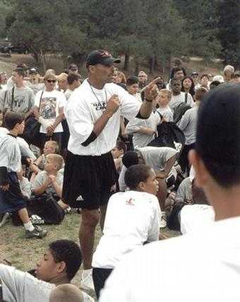

Jun 24, 2004

{kind=link}
All the New York Giants had to do was drop a knee to stop the clock in the few remaining seconds of a big game back in 1978, and they’d have the victory. But the coach sent a highly unusual play in from the sidelines.
The Giants quarterback turned around to look at the running back. Both were shaken up by the call. The football snapped out before the quarterback was ready and bounced from his hands.
A young hotshot on the Philadelphia Eagles defense scooped up the loose football before anyone else figured out what had happened. He ran it in for a 26-yard touchdown and stole the win. The play, now known as the “Miracle in the Meadowlands,” is one of the most famous in the history of the National Football League.
The hotshot defender was Herm Edwards. Now fifty years old and in his fourth season coaching the New York Jets, he’s still a young hotshot, as far as NFL head coaches are concerned.
“You make your own luck,” says Edwards, not talking only about a play made long ago. “If you work hard and you’re willing to sacrifice things, good fortune will come your way.”
Edwards was five in 1959, when his father was transferred to Fort Ord and the family moved to Seaside. Edwards soon began playing football around the neighborhood.
“To become a professional was his dream,” says Martha Edwards. “From little on, he was so determined. That’s all he ever thought about.”
At the time, kids did not play tackle football until tenth grade. But Edwards almost never got a chance to strap on pads. “When I was young, she was petrified,” he says.
“He came home one day and said, ‘Mom, you have to sign these papers, so I can play on the football team.” recalls Martha Edwards. “I said, ‘What! I’m not going to sign. I don’t want you to play that kind of game.’”
“As a football coach, you’re not going to let a great athlete not play football,” says Dan Albert, the coach at Monterey High, and now mayor of the city. Albert spoke with Martha Edwards, and she eventually relented.
Edwards played both defense and offense, but favored the offensive wide receiver position—he just loved catching passes. But he didn’t get to do a lot of that at Monterey.
“Back when Dan Albert was head coach, if you threw five passes in a game, you were lucky,” Edwards says. “I actually had more interceptions than receptions as a wide receiver.”
His prowess as a pass defender caught the attention of top colleges. Dick Vermeil at UCLA tried to recruit him. But in 1972, Edwards chose to attend UC Berkeley. In his sophomore year, he returned to Seaside and played a year at Monterey Peninsula College. He went back to Berkeley for another year before finishing at San Diego State. He set a Berkeley record with four interceptions in a single game. After college, he was acquired by the Philadelphia Eagles, with Dick Vermeil as head coach.
Edwards was recognized for more than just his talent for interceptions. The opportunity to coach football emerged. “It was almost like I was pushed in that direction by people in the league,” he says.
When he retired as a player in 1986, he took a coaching position at San Jose State. Two years later, he returned to the NFL as a scout with the Kansas City Chiefs. In 1996, Edwards became assistant head coach for the Tampa Bay Buccaneers, and in 2001, he became head coach of the Jets.
Edwards showed his stuff right out of the blocks, taking the Jets to the playoffs in both of his first two years.
“You see the way he carries himself, the way he acts, and just his hunger for the game, his hunger to win,” says Wayne Chrebet, the Jets’ wide receiver. “He’s the kind of guy who makes you a better player and a better person.”
“Herman has always been a guy who has given back to the community,” says Joe Bommarito, director of the Herm Edwards Football Camp. “We are fortunate to have a guy like him who’s never forgotten where he came from.”
Edwards will run a free, one-week-long football camp beginning June 28 at CSU Monterey Bay, teaching the fundamentals of football, and more than that.
“His message is the same,” says Bommarito. “He’s teaching the NFL guys, and he’s teaching the young guys. It’s all about doing the right thing and being a good person.”
Says Edwards, “I always tell young people that in life God blesses everybody with some talent. You have to find your talent. Once you find it and if you have passion that goes with that talent, along with opportunity, you’ll have a chance to be successful.”
The 9th Annual Herm Edwards Football Camp runs June 28–July 2. Registration is free, limited to 600, ages 9–17. For more information 582-4270 or visit http://sports.csumb.edu/athletics/camp_clinic/index.htm.
Printer Friendly Version